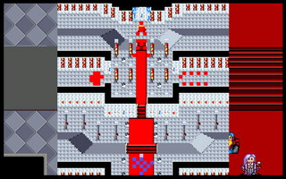
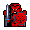
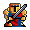
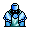

 登场人物：
雷特米兰克隆艾利欧巴拉多洛加希瓦那卡里斯莱特凯亚莉娜索尼克雷伊
本关敌人：
LV20 哈奇 （HP12000,AP600,DP260,HIT230,EV55,MV4）
LV18 禁卫队长 （HP5000,AP424,DP268,HIT170,EV70,MV6）
LV12 禁卫军步兵x8 （HP800,AP310,DP147,HIT160,EV60,MV4）
 LV15 炎之军团长 （HP800,AP528,DP125,HIT115,EV45,MV8）
LV12 炎之骑兵x8 （HP800,AP360,DP104,HIT111,EV36,MV7）
LV15 地之军团长 （HP960,AP325,DP275,HIT145,EV25,MV2）
 LV12 地之战士x8 （HP960,AP256,DP218,HIT121,EV16,MV2）
 LV15 大祭司x4 （HP640,AP195,DP242,HIT105,EV45,MV3,轰雷落,再生术）
胜利条件：敌人全灭
失败条件：雷特死亡
战后报酬：
无
攻略简要：
一开始火之军团和地之军团会向我方前进，不过这两团的命中率都颇差，如果到这章时，全员已升到满级，那么除了少数几位外，基本上是很难被打中的。对付哈奇，让高闪避、高防御的人（如雷特、米兰等）去挡住他，其他人则在外围攻击，但要注意哈奇的攻击距离有三格，所以一受伤就要退下来休息回血。
战后商店道具:
无 |
剧情对话：
哈奇:雷特,你终于来了...十几年不见,你和雷伊一样,都已经长大成人了...
雷特:哈奇!想当年你为了一己私心,与魔族勾结来篡夺王位,导致我家破人亡!今天一定要向你讨回个公道!
雷伊:为了得到王室秘藏之力你竟然让迪斯改变我的记忆,并想让我们兄弟自相残杀以坐收渔翁之力!要不是我的记忆已经回复的话,只怕就让你的奸计得逞了!
哈奇:...有些事情的前因后果,并不是如同你们想的一样...罢了,既然你们今天已经来到这里,就来做一个了断吧!
打败了哈奇及他的手下禁卫队长、地之军团长、炎之军团长等高级将领。
哈奇:雷特,你们赢了...动手吧!
雷特:好!那你就觉悟吧!
安妮:等等!
洛加:安...安妮!你没事吧!
安妮:洛加,我还好...雷特王子...求求你不要伤害,我大哥哈奇,他是被迪斯下了咒语而被控制了心智...
索尼克:这么说来,他也是跟雷伊一样,被迪斯所控制了?
安妮:是的...当初我大哥刚被下咒时,起初还有一段时间是清醒的.那时他已经感到事态严重便要我赶到潘达拉山向圣者求救.没想到被迪斯发现了,就派人一路追杀.后来我虽然侥幸逃过一劫但是也因为头部遭到重创而丧失了一切的记忆...后来洛加经过,就把我救了回去..
洛加:原...原来是这样...那你是如何再度回复这些记忆的呢?
安妮:当初迪斯藉助黑暗的力量以邪法找寻雷特王子的下落之际,也发现到了我的存在.他便在假藉我大哥之名义派兵抓拿雷特王子之际,还秘令莱卡斯将我杀了灭口.幸好莱卡斯尚念着我大哥的情分,不仅告诉我真实的身份,还瞒着迪斯将我带回宫中以便让我们兄妹相认.幸好迪斯正致力处理雷特王子的事情,所以也就未注意到.
希瓦那:没想到这无恶不作的莱卡斯,也会这么做...
安妮:如今真正的罪魁祸首迪斯已经伏诛,而我大哥也在那时就清醒了过来.刚刚那一战,他并没有全力战斗,只是为了求得一死罢了...他在你们进来之前,还要我千万不要阻止他,这样他的心中才能好过些但是我怎么能够让我的大哥,在背负叛国骂名的情形之下,含冤莫白而死呢?
哈奇:...罢了,安妮...事情既然全是因我而起,就让我接受应有的制裁,以慰先王在天之灵吧!
雷特:...唉!这或许都是天意吧!大哥,我...
雷伊:我明白了,雷特.就照你的意思去做吧!
雷特:...哈奇!你的叛国罪证确凿,本来罪无可赦,但是念在你是受迪斯所控制而身不由己,所以...
艾利欧:怎...怎么回事?
莉娜:我感到有非常邪恶的气息,相当迅速地弥漫开来...
索尼克:不好!莫非是因为封因被解开,使得大邪神即将复活?
雷特:那可麻烦了!那我们要如何制止大邪神的复活呢?
索尼克:事到如今我们还是得依靠炎龙及黑龙的力量,来造出并持续封印的力量.虽然我知道如何施展这『圣邪封禁咒』,但是...
雷伊:但是什么?
索尼克:必须要有人穿著这两套装备,在施法中以他们的意志,来维系这两股力量的平衡使其不致因过于强大的力量冲突,而导致双方的毁灭.但是这两个人也会因此...
米兰:那就是说,必须要有两个人牺牲...
雷伊:也罢!我在失去记忆之间,双手已经沾满了血腥,所以死而无憾.但是雷特...
雷特:大哥,若能用我的性命,来换取整个世界的和平,那也是值得的啊!
哈奇:雷特王子!
雷特:...!
安妮:啊!大哥!你怎么把雷特殿下击昏了?
哈奇:��放心,我没有恶意...雷特王子,你还得统帅大家,继续治理罗特帝亚王国;这个换取和平的任务,就交给我吧!
安妮:大哥!你...
哈奇:安妮,在刚才一战之中,我本来就想以死谢罪了，如今有这个偿债的机会,就让我安心地去死吧!
安妮:大哥...
雷伊:...哈奇,既然你已经如此决定,就穿上雷特身上的炎垄铠甲吧!我想父王在九泉之下,也会谅解你的.至于治理王国这件事,我们还是交给雷特比较合适吧!
索尼克:现在事不宜迟!你们已经准备好了吗?
雷伊:各位!虽然我们的相处时间不长但是我会永远记得你们的...
莉娜:雷伊...收下这个护身符吧!这是我们精灵族的宝物,希望你...你会...特别...记得...我...我...
雷伊:谢谢你,莉娜...如果有来生的话,希望我们能够...再度相聚在一起...
哈奇:安妮,大哥要走了,希望你能和你所爱的丈夫永远地好好相处吧!祝福你们...
安妮:大哥...
洛加:安妮...别哭了.你大哥如今求仁得仁,也可以弥补他从前的错了...
索尼克:好,要开始了...高居在诸天之上的诸神啊请听我的祈求,将这两股正邪之力,化为封印妖魔之力..
第十七章完
尾声
当雷特一行人醒来之时
王宫虽然已经崩坏
但大地已经再度恢复了平静
讨伐军已经获得了最后的胜利
罗特帝亚王国再度恢复了和平
雷特以王子的身份
在百姓们的欢呼之中
继任为罗特帝亚王国的新国王
在战役之中的有功人员
克隆,封为:罗特帝亚王国顾问,协助雷特王重建王国
艾利欧,封为:王宫禁卫队长,维持着王宫内的秩序与和平
卡里斯,封为:光之战士,渡海到对岸大陆踏上修练之旅
凯亚,封为:战士团长,率领着罗特帝亚战士团
巴拉多,封为:镇边将军,驻守着王国的边疆
希瓦那,封为:骑士团长,率领着罗特帝亚骑士团
莱特,封为:神圣骑士,与卡里斯结伴共同历险
洛加,封为:巴萨郡领主,与爱妻安妮过着幸福的生活
索尼克,封为:护国大法师,留在王宫辅佐雷特执政
米兰,...成为罗特帝亚王妃,与雷特王在一起共同生活
至于其它人呢?..........
在巴萨郡遥远的农村内
有一个老人正在辛勤地耕作
旁边还不时有小孩嬉戏玩耍
其中一个小孩说:
哈奇爷爷!我们抓到一只虫虫!赶快过来看哦!
曾经有许多过去的老人
看着天真无邪的小孩
欣慰地微笑着...
莉娜在亚姆山上
遥望着远处的夕阳
以及繁华的格菲迪城
心中的伤痛再度涌起
这时
一个熟悉的人影缓缓出现
莉娜:你...你不是...
身影:我...我也不清楚...但是不论如何,我终于回来了...
莉娜:雷...雷伊!
雷伊:莉娜!...或许是,你的护身符使我能平安归来吧!
莉娜:这真的是太好了...
两个相依的人影
共同眺望着夕阳落下的景色
心中充满了甜蜜
原本落寞的夕阳
如今看起来
好象变成了一幅美丽的图案
THE END |